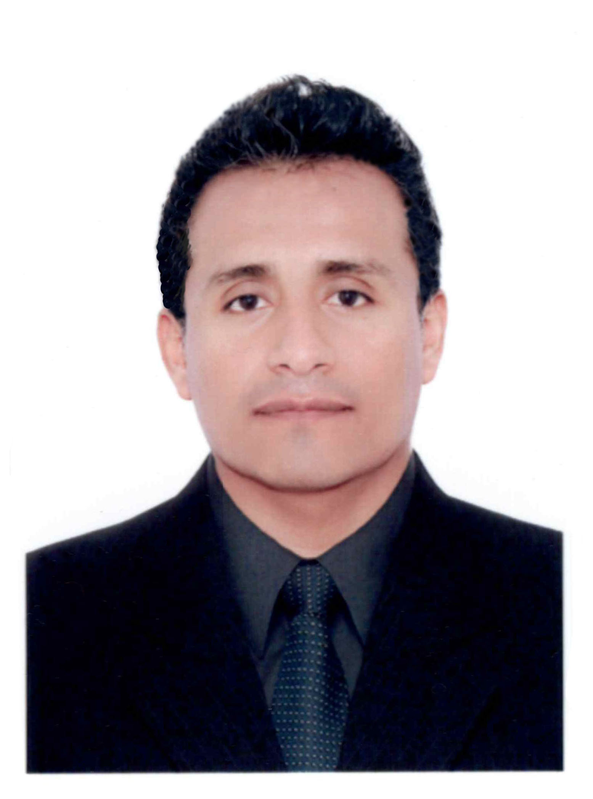

Julio Ernesto Chavez Crisanto
Soy un joven de 38 años que busca aprender y mejorar en el día a día a base de esfuerzos y dedicación lograr cumplir mis metas fijadas,
tengo las virtudes de la honradez la diciplina y perseverancia que son las que me rigen en mi camino.
Educacion
- Primaria
- Colegio San Miguel de Piura
- Secundaria
- Colegio San Miguel de Piura
- Superior
- Universidad Alas Perunas (Titulo universitario de Ingenieria de Sistemas)
Experiencia laboral
- En el año 2021 trabaje en la Gerencia de desarrollo sosial de la Municipalidad provincial de Piura, en ela que me desempeñe como coordinador de visitas domiciliarias del proyecto Meta 4
- En el año 2020 Trabaje como promotor de Ventas de equipos de computo para la prestigiosa marca Lenovo
- En el año 2020 Trabaje como promotor de Ventas de equipos de computo para la prestigiosa marca HP
- En el año 2019 Trabaje como promotor de Ventas de audio y video para la prestigiosa marca Samsung Electronic
Habilidades
- Capas de disernir probleas y brindar soluciones a medida.
- Tengo la habilidad de adaptarme facilmente a mi entorno de trabajo.
- Puedo dominar con facilida cualquier Sistema de gestion en corto tiempo.
- Tengo conocimiento en los diversos softwares de ofimatica.
- Conocimeintos y dominio de sofware de diseño grafico.
- Conocimiento en redes y tecnologias informaticas
- Conocimeintos en soporte de equipos de computo
Hobbis
- Jugar futbol
- Jugar voley
- Salir a correr
- Tocar guitarra
- Cantar
Pretenciones laborales
Me gustaría poder quedar entre los seleccionados del challenge, cursar correctamente y de forma sobresaliente los curso de Henrry, obtener un trabajo en una empresa en la cual me pueda desarrollar y pueda llegar a marcar la diferencia, y así llegar a convertirme en un buen programador exitoso.